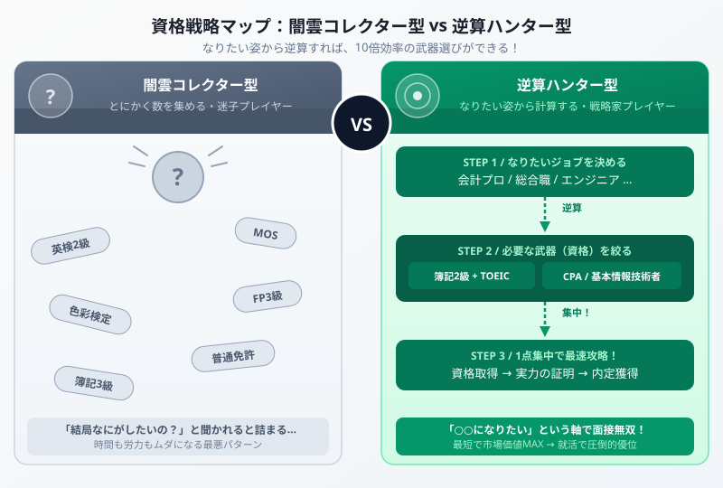

キャリア戦略コラム | 公開：2026年6月30日
大学生よ、資格を闇雲に集めるな！
将来から逆算する「最強の資格戦略」
著者：大谷 一輝（大阪経済大学3回生・日商簿記1級勉強中）
大
著者・大谷からひとこと
こんにちは、大谷です！
大学生活が始まると、周りから「とりあえず就活のために何か資格取っといたほうがいいよ」って言われませんか？
でも、ちょっと待ってください。将来どういうところで働きたいかが決まっていないのに、闇雲に資格を網羅して取得しても、【時間も労力も本気でもったいない】です！
僕自身、大学の講義や自分の3,000時間以上の勉強の中で「うわっ、なんじゃこりゃ……目的のない勉強ってこんなにつらいし、意味がないんだ」と激しく痛感した経験があります（笑）。
今回は、自分の行きたい未来から【逆算】して、本当に今習得すべきスキルをパズルみたいに見つけ出す「最強の資格戦略」を優しくナビゲートします。
また、モチベ維持のために、記事の末尾にある【いいねボタン】もポチッと押してもらえると、めちゃくちゃ励みになります！
まず「2つのプレイスタイル」の差を理解しよう

図：資格戦略の2パターン比較（左：闇雲コレクター型、右：逆算ハンター型）
「とりあえず資格を取れ」罠の正体
多くの大学生が陥る「とりあえず資格コレクター」状態の正体を解剖します。この罠には、実はとても「もっともらしい理由」があるので気をつけてください。
罠その1：「保険として取っておけばいい」という錯覚
「英検2級、MOS、FP3級、色彩検定……どれも将来役に立つかもしれない！」と考えて取り始めると、勉強時間が無限に拡散していきます。でも人事担当者は、この「なんとなく揃えた資格リスト」を見て「で、あなたは何がしたいの？」と感じるだけです。
資格は「あなたの能力の証明書」ですが、「何のための証明か」が見えなければ、採用担当者には刺さりません。
罠その2：「難易度が低い資格を先に片付けよう」の逃げ
本当に取りたい難しい資格（公認会計士・TOEIC 800点）から逃げるために、簡単な資格を「実績づくり」として先に取り始めるパターンです。一見合理的に見えますが、これは難関資格への挑戦を先送りにする、最も危険な習慣です。
⚠ 真実：「資格の数」より「資格の文脈（なぜこれを取ったのか）」が面接で問われる
面接官が見るのは資格の数ではなく、「この学生はなぜこの資格を取ったのか？将来像と一致しているか？」というストーリーです。文脈なき資格リストは、むしろ「方向性が定まっていない人」というマイナスシグナルになりえます。
逆算の黄金ルール：「なりたい自分（職業・働き方）を先に決め → 必要なスキルセットを調べ → 最短の資格ルートを逆算する」この順番を守るだけで、勉強の効率が桁違いに変わります。
3つのプレイスタイル別・逆算ロードマップ
ここからが本題です。働き方の方向性を3パターンに分け、それぞれの「最速で市場価値を上げる武器の組み合わせ」を解説します。どれか1つが「自分に近いかも」と感じたら、そのルートの詳細をじっくり読んでください。
1
超専門職ルート｜会計・法律・税務のプロフェッショナルを目指す人
対象：公認会計士・税理士・司法書士・中小企業診断士などを本気で狙っている人
このルートの鉄則は「一点突破」です。複数の中難易度資格を集めても、最難関資格の合格には一切近づきません。むしろ分散した勉強時間が「最終的に何も取れなかった」という最悪の結末を招きます。
主要資格の目安学習時間：
| 資格名 | 目安学習時間 | ポイント |
|---|
| 公認会計士（CPA） | 3,500〜5,000時間 | 大学2年から本格スタートが理想 |
| 税理士（全5科目） | 1,500〜3,000時間 | 科目別合格制で戦略的に攻略可能 |
| 司法書士 | 2,000〜3,000時間 | 法学部以外でも合格者多数 |
| 中小企業診断士 | 1,000〜1,500時間 | ビジネス経験と相性が良い |
大学1年：まず簿記3級→2級で適性を確認
「数字・財務の世界が好きか」を見極める最速の手段が簿記です。簿記3級を100時間で仕上げ、楽しいと感じたなら簿記2級→その先の専門職ルートへ。苦痛だったなら、このルートではなく他のルートを検討しましょう。
大学2〜3年：予備校に入り「本丸」に全集中
CPA（公認会計士）なら「CPA会計学院」「TAC」、税理士なら「TAC」「大原」のような専門予備校が最速ルートです。独学は教材選びと勉強順序の最適化コストが大きすぎて、基本的にタイムロスになります。
絶対やってはいけないこと：他の資格への寄り道
「保険に宅建でも…」「TOEICも上げておきたい…」という気持ちは分かります。でも3,000時間以上が必要な最難関資格においては、1ヶ月の寄り道が6ヶ月の遅延につながります。
このルートの最強の判断基準：「もし試験に合格しなくても、この職業・業界で生きていきたいか？」と自問してください。答えがYesなら一点突破を選んでください。「保険も欲しい」ならルート2の方が向いています。
武器チップ：
日商簿記2級（足がかり）
公認会計士 / 税理士（本命）
2
一般企業総合職ルート｜商社・メーカー・金融・コンサルで市場価値MAXを狙う人
対象：大手企業・外資系・コンサルの総合職内定を目指している人
このルートの最強の武器は「簿記2級 × TOEIC 700点以上」という黄金の掛け算です。なぜこの2つなのか、理由を丁寧に説明します。
なぜ「簿記2級 × TOEIC」が最強なのか？
簿記2級の役割：財務諸表（貸借対照表・損益計算書）を読み解く力は、ビジネスのすべての意思決定の基礎です。「数字で語れる人材」というラベルは、業界・職種を問わず圧倒的に刺さります。商社なら貿易取引の損益計算、メーカーなら製造原価の把握、金融なら投資先企業の財務分析——あらゆる場面で直結します。
TOEIC 700点の役割：外資系・グローバル展開している大手企業の採用では、TOEIC 600点がほぼ足切りラインです。700〜750点あれば「グローバル対応可能」として評価され、英語面接や外国人同僚との協働への期待値が上がります。
掛け算の効果：簿記2級（財務力）× TOEIC 700（語学力）の組み合わせは「数字も英語もできる、グローバルに使える人材」として市場価値が一段跳び上がります。どちらか片方だけでは弱い。両方あって初めて「強い武器のセット」になります。
さらに差別化したい人のプラスα
| 目指す方向 | 追加武器 | 理由 |
|---|
| 金融・ファイナンス系 | FP2級（ファイナンシャルプランナー） | 資産運用・保険・不動産の知識証明。金融業界の面接でFP2級は特に評価が高い |
| コンサル・データ分析 | G検定（AI・データサイエンス入門） | AI活用戦略の基礎理解を示せる。コンサルでのDXプロジェクト参加の足がかりになる |
| グローバル企業志望 | TOEIC 800点以上へ | 730点を超えると採用担当者の見る目がガラっと変わる。英語での即戦力として扱われ始める |
大学1〜2年：簿記3級→2級を最優先で攻略（300〜500時間）
まず簿記2級を取得してしまいましょう。市販テキスト（スッキリわかる3級→2級）とこのサイトの記事を組み合わせれば、大学1〜2年のうちに合格できます。就活の軸が定まる前に「武器その1」を確保しておくのが理想です。
大学2〜3年：TOEIC 700点を並行して攻略
簿記2級の学習が落ち着いたらTOEICの勉強を始めます。現在の点数が400〜500点台なら+200点を6ヶ月〜1年で目指します。スタディサプリEnglish・公式問題集の反復が最短ルートです。簿記とTOEICは学習スキルが被らないので、完全に並行して進められます。
大学3年秋〜：インターン・就活で「武器の文脈」を語り切る
簿記2級×TOEIC 700を持った状態でインターンシップに参加することで、「なぜこれを取ったのか？」という動機が就活のエピソードとして生きてきます。資格は「取った事実」より「取った理由と活用」を語れて初めて武器になります。
⚠ このルートで絶対やってはいけないこと：志望業界と無関係な「なんとなく取りやすい資格」への寄り道。宅建・色彩検定・秘書検定などは、不動産・デザイン・秘書職を明確に目指しているなら意味がありますが、金融・商社総合職の面接でアピールしても「なぜ？」という顔をされるだけです。
武器チップ：
日商簿記2級
TOEIC 700+
FP2級（金融志望）
G検定（DX・コンサル志望）
3
IT・クリエイティブルート｜エンジニア・データサイエンス・DX推進職を目指す人
対象：Webエンジニア・データサイエンティスト・DX推進・クリエイター志望の人
IT業界において資格は、他の業界よりも「実績」に劣ります。採用担当者が最も見るのは「何を作ったか（ポートフォリオ）」です。しかし、「基本情報技術者試験」という1つの資格は例外的に強い武器になります。
なぜ「基本情報技術者」が特別なのか？
基本情報技術者試験（通称FE）は、アルゴリズム・データ構造・ネットワーク・セキュリティ・データベースの基礎を網羅する国家試験です。この資格が特別な理由は、「コードを書けること」の証明ではなく、「コンピュータサイエンスの論理的な基礎が身についている」ことの証明だからです。
IT企業の技術系面接では「FEを持っているなら基礎は大丈夫」という共通認識があり、採用側の初期スクリーニングを大きく通過しやすくなります。
STEP1：基本情報技術者試験を大学2〜3年で取得（200〜400時間）
科目A（知識問題・多肢選択）と科目B（アルゴリズム・プログラミング）の2部構成で、CBT方式で随時受験可能です。参考書は「キタミ式」「パーフェクトラーニング」が人気。まずここを攻略してしまいましょう。
STEP2：実践ポートフォリオを並行して構築する（これが本命）
「基本情報 + GitHub実績ゼロ」では、IT業界の採用では弱すぎます。資格取得と並行して、Webアプリ・ツール・スクレイパーなど、何か1つ「自分が作ったもの」をGitHubに公開しましょう。このポートフォリオが採用面接での最強の武器になります。
STEP3：志望先に合わせた追加武器を選ぶ
クラウドエンジニア志望→「AWS Cloud Practitioner（CLF）」が業界標準の入門資格として高評価。データサイエンス志望→「G検定」+ Pythonスキル（Kaggle参加実績があればなお強い）。デザイン志望→Figmaの実績 + Webデザイン技能検定。
IT業界特有の注意：「資格だけで実績ゼロ」は逆効果
IT系の採用担当者は、資格の羅列より「GitHubで何を作っているか」「どんな問題を解決したか」を圧倒的に重視します。基本情報技術者試験は「論理力の証明」として有効ですが、それだけでは不十分です。ポートフォリオ作成と資格取得を必ず両輪で進めてください。
| 志望職種 | 必須武器 | プラスα |
|---|
| Webエンジニア | 基本情報技術者 + GitHub | 応用情報技術者（将来的に） |
| クラウドエンジニア | 基本情報技術者 + AWS CLF | AWS SAA（ソリューションアーキテクト） |
| データサイエンティスト | G検定 + Pythonスキル | 統計検定2級・Kaggle実績 |
| DX推進（事業会社） | 基本情報技術者 + 簿記2級 | ITストラテジスト（将来的に） |
| Webデザイナー | Figma実績 + ポートフォリオ | Webデザイン技能検定3〜2級 |
武器チップ：
基本情報技術者試験
GitHub ポートフォリオ
AWS CLF（クラウド志望）
G検定（データ志望）
「どのルートか決まらない……」という人へのアドバイス
「3つを読んでみたけど、どれも自分に当てはまるような気がする（またはどれも違う気がする）」という人、それは至って普通です。大学1〜2年生の段階で将来像が明確な人の方が少数派です。
そういう場合でも、今すぐできることがあります。
OB・OG訪問で「リアルな1日」を聞く
キャリア系アプリ（ビズリーチ・キャンパス、Matcher等）を使って、興味ある業界で働いている社会人に「1日のスケジュールを教えてください」と直接聞く。これだけで「自分がこの仕事を毎日できるか」のリアルな解像度が上がります。
夏インターンに2〜3社参加してみる
3つのルートで興味がある業界・職種のインターンシップに1社ずつ参加することで、「向いてる・向いてない」の体感が得られます。頭で考えるより体で確かめる方が100倍速い。
「まず1つ試す」として簿記3級→2級は最強の入口
ルートが決まっていない段階でも「取って損しない」唯一の資格が簿記です。専門職ルートでも、総合職ルートでも、IT業界でも（特にDX推進職）、簿記の財務知識は必ず役に立ちます。迷っている時間があれば、まず簿記から始めてしまうのが最も合理的な「時間の使い方」です。
大谷の個人的な意見：大学3年の夏インターン時点で「自分が何をしたいか8割決まっていれば十分」です。1〜2年生のうちは「広く浅く探索 + 簿記という共通土台の構築」に集中するのが、長期的に見て最も効率的な時間の使い方だと思います。
まとめ
- 「とりあえず資格を取れ」は古い。「なりたい姿から逆算する」だけで効率が10倍変わる
- 超専門職ルート → 一点突破。公認会計士・税理士は資格が「仕事そのもの」なので分散は厳禁
- 一般企業総合職ルート → 簿記2級 × TOEIC 700点が最強の武器の掛け算
- IT・クリエイティブルート → 基本情報技術者 × ポートフォリオ。資格より実績が命
- ルートが決まらない段階では「簿記3級→2級」は取って損しない万能の入口
- 資格は「数」より「文脈（なぜ取ったのか）」が面接で問われる。文脈ある1枚が、文脈なき10枚に勝る
自分の武器が決まったら、さっそく攻略を始めよう！
スタディクエストには、簿記3級・簿記2級・FP・基本情報技術者など、あなたの選んだルートに必要な全117記事が揃っています。スタディガイドから、今日学ぶべき記事をピンポイントで見つけましょう。
全117記事のスタディガイドへ →
⚔ 学習記録で「逆算の軸」を可視化しよう
スタディクエストで毎日の学習時間を記録すると、合格ラインまでの進捗が一目でわかります。
無料で学習記録を始める →